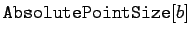

Inhalt Index DeskTop Bronstein

 Computeralgebrasysteme Graphik in Computeralgebrasystemen Graphik mit Mathematica
Computeralgebrasysteme Graphik in Computeralgebrasystemen Graphik mit Mathematica


Mathematica stellt die in der folgenden aufgelisteten zweidimensionalen Graphikobjekte zur Nutzung bereit.
| Punkt an der Position x,y | |
| Linienzug durch die angegebenen Punkte | |
| ausgefülltes Rechteck mit den angegebenen Koordinaten links unten, rechts oben | |
| ausgefülltes Polygon mit den angegebenen Eckpunkten | |
| Kreis mit dem Radius r um den Mittelpunkt x,y | |
| Kreisbogen mit den jeweiligen Begrenzungswinkeln | |
| Ellipse mit den Halbachsen a und b | |
| elliptischer Bogen | |
| ausgefüllte Kreise bzw. Ellipsen (anstelle von r Halbachsenangabe) | |
| ergibt text zentriert auf den Punkt x,y |
Neben diesen Objekten bietet Mathematica für die Art der Darstellung weitere Primitiven, die Graphikanweisungen. Sie legen fest, wie die Graphikobjekte dargestellt werden. Zu ihnen gehören die in der folgenden Tabelle aufgelisteten Anweisungen.
| Punkte werden mit dem Radius a als Bruchteil der Gesamtbildgröße gezeichnet | |
|  | zeichnet die Punkte mit dem absoluten Radius b (gemessen in Druckerpunkten pt) |
| zeichnet Linien mit der relativen Breite a | |
| zeichnet Linien mit der absoluten Breite b (ebenfalls in pt) | |
| zeichnet Linien als sich wiederholende Folge von Strichen der angegebenen Länge (in relativem Maß) | |
| das gleiche wie vorstehend, aber in absolutem Maß | |
| bestimmt die Graustufe des Objekts (p=0 ergibt schwarz, p=1 weiß) |
Darüber hinaus gibt es Anweisungen für Farbeinstellungen, auf die hier nicht eingegangen wird.